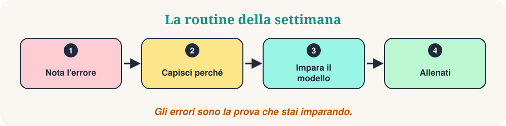

Benvenuti a Errori del sabato. Ogni settimana guardiamo cinque piccoli errori che fanno gli studenti, capiamo perché succedono e li sostituiamo con un modello naturale. Gli errori non sono un problema. Sono la prova che stai imparando.
Questa settimana: cinque errori frequenti in italiano. Ogni errore segue gli stessi passi: la frase non proprio giusta, la frase migliore, il motivo, una regola semplice e un mini-quiz. Osserva il modello, non solo la singola frase.

I cinque errori di oggi
- Essere o avere?
- Preposizioni articolate
- Il problema (maschile!)
- Piacere
- Conoscere o sapere?
Essere o avere?
«Ieri ho andato al cinema.»
«Ieri sono andato al cinema.»
Perché succede. Il passato prossimo ha due ausiliari. Molti studenti usano sempre «avere», perché è il più frequente.
La regola COSY. I verbi di movimento e di cambiamento (andare, venire, arrivare, partire, nascere) usano essere. Il participio si accorda con il soggetto.
- Maria è andata a casa.
- Siamo arrivati tardi.
- Ho mangiato una pizza.
❓ Maria ___ al mercato ieri.
«Andare» usa «essere» e il participio si accorda con Maria: è andata.
Preposizioni articolate
«Vado a il cinema.»
«Vado al cinema.»
Perché succede. In italiano la preposizione e l'articolo si uniscono in una sola parola: a + il = al.
La regola COSY. a, di, da, in, su + articolo diventano una parola: al, del, dal, nel, sul.
- Vado al mercato.
- Il libro è sul tavolo.
- Esco dalla scuola.
❓ Il gatto è ___ divano.
su + il = sul.
Il problema (maschile!)
«Ho la problema.»
«Ho un problema.»
Perché succede. Molte parole in -a sono femminili, ma alcune parole di origine greca in -ma sono maschili.
La regola COSY. Impara queste parole con l'articolo: il problema, il programma, il tema, il sistema.
- Il problema è facile.
- Un programma interessante.
- Il tema della lezione.
❓ ___ problema è difficile.
«Problema» è maschile: il problema.
Piacere
«Io piaccio la pizza.»
«Mi piace la pizza.»
Perché succede. «Piacere» funziona al contrario: la cosa che piace è il soggetto, la persona è il complemento (mi, ti, gli).
La regola COSY. Mi piace + singolare. Mi piacciono + plurale.
- Mi piace il caffè.
- Mi piacciono i film italiani.
- Ti piace studiare?
❓ ___ i film italiani.
«I film» è plurale: mi piacciono.
Conoscere o sapere?
«Non so Maria.»
«Non conosco Maria.»
Perché succede. In molte lingue c'è un solo verbo. In italiano ce ne sono due, con usi diversi.
La regola COSY. Conoscere = persone, luoghi, cose. Sapere = informazioni e capacità (sapere + infinito).
- Conosco Roma.
- So parlare italiano.
- Non so dove abita.
❓ Io ___ nuotare.
Una capacità: so nuotare.
Il tuo allenamento di 10 minuti
- Scegli due errori che a volte fai.
- Scrivi tre frasi nuove per ognuno, usando la regola.
- Dille ad alta voce e registrati.
- Confronta le tue frasi con gli esempi qui sopra.
- La settimana prossima, cerca gli stessi modelli nelle conversazioni vere.
Da ricordare
Osserva il modello. Allenati sul modello. Fallo tuo. Quale risposta ti ha sorpreso di più? Scrivila e usala in una frase oggi.
“Gli errori fanno parte dell'apprendimento.”